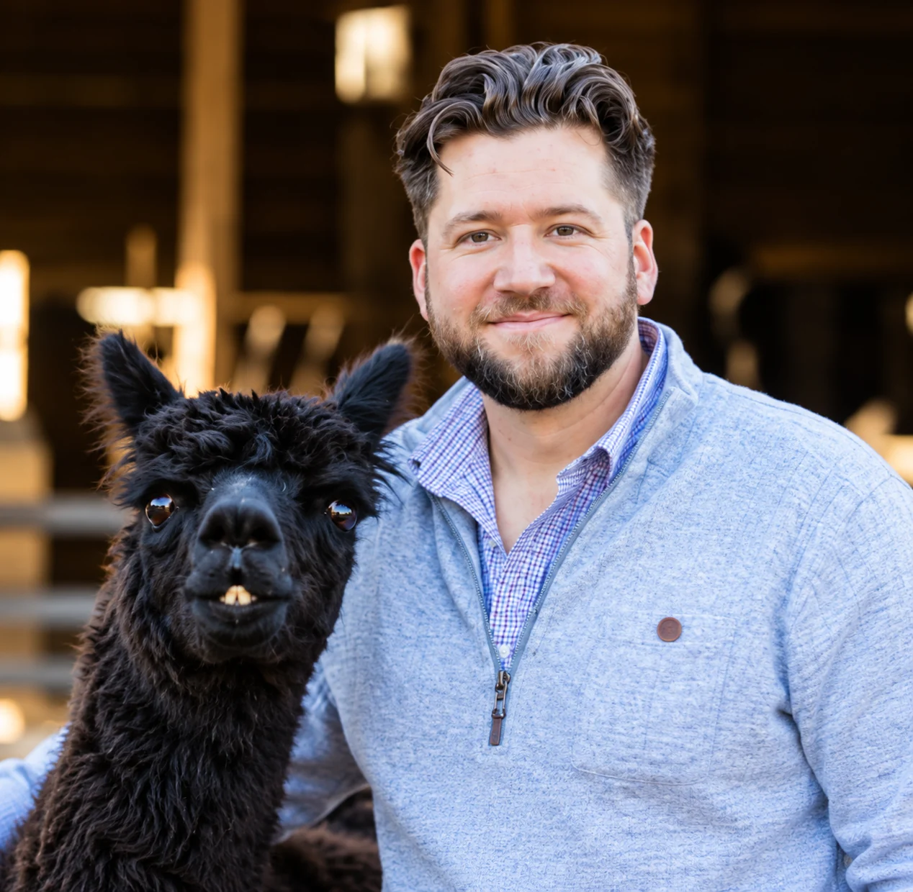

ABOUT AI4MYNEEDS
Helping people find practical ways to use AI in everyday life, at work, and in business.
AI4MyNeeds is built on a simple idea: you shouldn't have to be an AI expert to discover what AI can do for you. Whether you're just getting started or already using AI, there's always something new worth exploring.
Why AI4MyNeeds exists
AI is everywhere, but figuring out how to use it isn't always straightforward.
Some people have never opened ChatGPT. Others use AI every day but haven't explored what else is possible. And many people have challenges that AI could potentially help with, but they wouldn't think to look for an AI solution.
AI4MyNeeds is here to bridge that gap. We're building a place where people can explore ideas, discover useful applications, learn new skills, and find tools that make a real difference in their personal or professional lives.
Meet the Creator

Meet the Creator
I'm Mark, the creator of AI4MyNeeds.
I've spent more than 20 years in customer experience, operations, and leadership, working with people and teams to solve problems, improve processes, and find better ways to get things done.
As AI became more accessible, I started experimenting with ways to bring it into the workplace. I've built AI assistants, introduced practical AI tools into everyday workflows, and helped colleagues learn how to use AI more effectively.
What stood out to me wasn't just what AI could do. It was how many opportunities people were missing simply because they didn't know where to start or what to ask.
That's a big part of why I created AI4MyNeeds.
What you'll find here
AI4MyNeeds brings together practical guidance, real-world examples, learning resources, tools, and opportunities to explore what's possible with AI.
Through Try That With AI, we'll highlight useful, creative, and sometimes unexpected ways AI can help. From simple everyday tasks to more sophisticated workflows, the idea is to keep discovering new possibilities.
Our approach
We believe technology should make things easier, not more complicated.
That means starting with what someone is trying to accomplish, being realistic about what AI can and cannot do, and recommending solutions because they're useful, not simply because they're new.
Sometimes AI will be the answer. Sometimes it's just one part of a better solution.